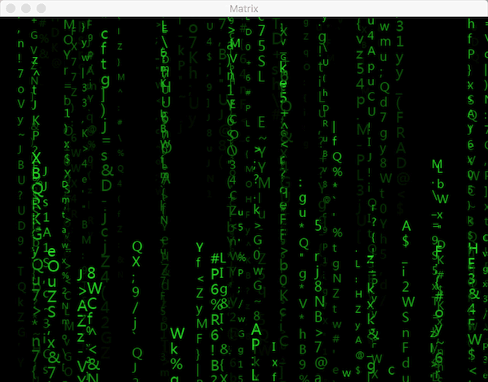
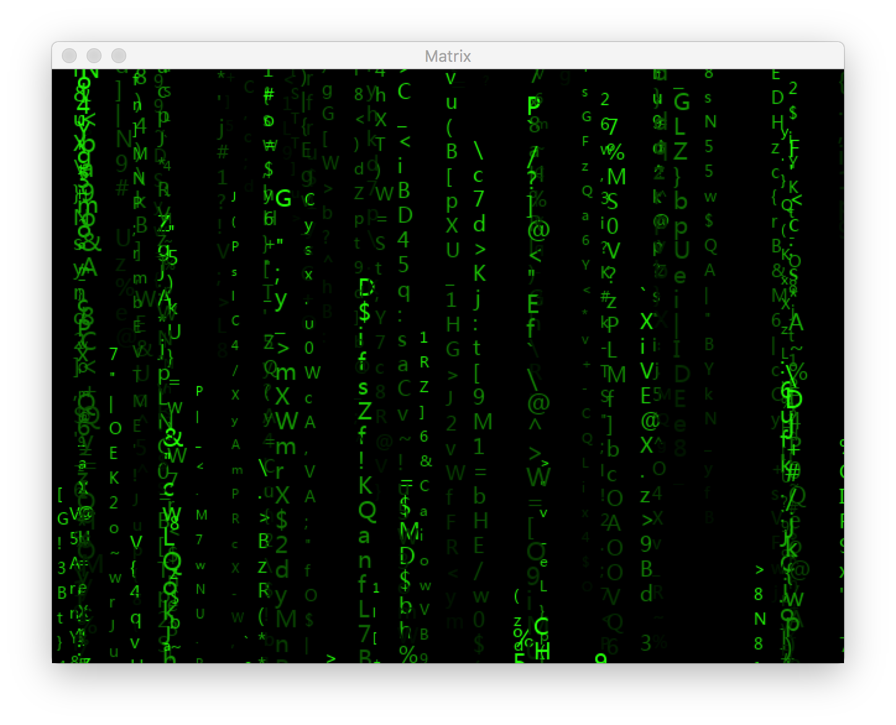

利用Python自动生成小学生加减乘除口算考试题卷。
作者:J.sky 发布时间:2018-10-24 10:50:04 Tag:
站长源创
孩子上小学一年级了，加减乘除的口算就要开始练习了，估计老师肯定会让家长出题，所以提前准备一下，利用Python开发了一套自动生成小学生口算题的小应用。而且今天是程序员节，撸200行代码庆祝一下。：）
为了让程序员老爹解放抄题的双手，让你拥有更多的时间去写代码而不用去手写几道口算题而伤神伤脑。所以有没有娃子的程序员爹爹加入一起来继续优化个开源小程序的？有什么点子，发现什么BUG，欢迎留言。
仅以此软件，献给那些热爱Python的程序员老爹们！
程序核心功能：
1.可以设置各算数项和结果的取值范围及多步算数符号的选择，可以生成求结果、求算数项、带括号的算式，最多支持3步算式题
2.可以简单设置文档标题，小标题。设置生成的口算题文档个数
使用方法：
1 确定本机支持python3.6.1以上版本
2 安装.docx模块,安装wxPython模块 安装方法：
pip3 install python-docx
pip3 install wxpython
3 下载程序进入主目录，终端下运行python App.py
4 修改运算项和结果范围里的数值,多步运算请添加修改需要的运算符号:
5 添加口算题到列表中，然后生成口算题,生成的口算题文件都在docx文件目录下，打开后连接打印机就可以开印了。
源码下载：
有时人生需要做出选择
作者:J.sky 发布时间:2018-06-12 10:05:40 Tag:
站长吐槽
好久没有更新自己的博客了，最近经历了很多变动，所以人生的规划也发生了一些微妙的变化。
这段日子没怎么看编程相关的书，今天随便看了一下，python已经是3.6.5，django也是2.0.6的版本了，想想自己前一阵学习py及django的时候，机器上的环境还是3.61和1.1X版.。。。
更新了一下站点的头部图片，上次更新时还是冬天的。。。。
可能暂时要放下编程了，是放下不是放弃，不久的以后我还会捡起来，因为我还有一个做游戏的梦想还未实现。想起30岁的时候开始学习编程，40而终，这些年没做成什么太出色的软件，但也因为代码养家糊了口饭，想想也算是值了，人生总是再变动，曾经看到过一篇文章介绍过，程序员黑客和画家很相似，所以那天拿起笔来就画了几个月感觉还不错，我能否再用10年成就一个插画师的梦想？
为自己加油！
感谢曾经路过17python网友，这个站点暂时还不会关闭，但内容也许有些改变，python还会继续，但可能会慢了一些，但我还会在学习python的路上前进的。
聊聊Python中的递归与快速排序那点事
作者:J.sky 发布时间:2018-01-30 14:38:39 Tag:
Python基础
最近买了两本算法相关的书，快速了翻看了一下，原来算法真是编程解决问题的最基础要素，以前很少关注算法这块，以为学了基础了解了一些框架包模块等就是学会了编程，请原谅我。。。
在Python中递归
递归比较简单的例子就是阶乘，看下递归的必要条件：
- 边界条件：确定递归到何时终止，也称为递归出口。
- 递归模式：大问题是如何分解为小问题的，也称为递归体。
阶乘中如果n=1那么就达到了边界条件，递归结束，如果大于1那么进入递归模式调用本体，具体看下代码：
def f(n):
if n == 1: return 1
return n * f(n - 1)
print(f(5))
上边就是一个简单的递归阶乘函数，很简单喽，不过在Python中，递归调用是有限制的，通过如下代码可以查看递归可以使用的层数:
import sys
sys.setrecursionlimit(5000) # 设置递归层数
print(sys.getrecursionlimit()) # 查看
Python中的快速排序
快速排序法是一个非常精典的递归例子，C语言标准库中的qsort函数的实现主是采用的快速排序法。
快速排序算法的边界条件是数组中只有一个成中了，即停止排序，否则继续递归模式。
具体看代码：
def q_sort(arr):
if len(arr) < 2 :
return arr
else:
p = arr[0]
print(p)
l = [i for i in arr[1:] if i <= p]
g = [i for i in arr[1:] if i > p]
temp = list()
temp.append(p)
return q_sort(l) + temp + q_sort(g)
print(q_sort([2,44,3,77,6,5,888,999]))
上边代码如果直接return q_sort(l) + p + q_sort(g)是会报错的，所以修改了使用list相加。
算法其实很有意思，程序都是有算法组成的，以后得多看看了。
本文源码下载：
“编学编玩”用Pygame编写游戏（10）pygame实现一个黑客帝国矩阵(Matrix)
作者:J.sky 发布时间:2018-01-16 10:25:21 Tag:
pygame
当年电影《黑客帝国》中下落的字符矩阵大家应该都会有很深的印象，即使今天重温一遍这部经典之作，仍然会觉这种电脑特效做的真帅啊，什么时候我也能做出这种效果来？想做就做，既然人家能做出来我们也能，好吧，先上图，最近不是流行什么开局一张图么？

Matrix的构思
我们把Matrix设计成矩阵下落的字符数组，整矩阵中有几十或上百条Matrix在下落，你可以想像一条条数组从天而降。。。。Matrix就是这其中的一条数组。 Matrix中有很多属性，用来控制自己的字符组成，下落速度，颜色深浅，间隔距离等,通过这些，控制自己在场景中下落，当然你的参数控制的越详细，可变数越多。
Matrix代码编写调试过程
刚开始的时候总觉得满屏的字符，应该从何处下手呢？，不妨先从场景中打印一组字符开始吧，新建一个场景，然后创建一个Matrix对象，在场景中打印出来， 当然这组字符是如何生成的呢？还要随机生成，好的，如果你想到这些了，那么你就去动手实践，随数机，字符，添加到数组。
c = random.randint(33, 127)
chr(c)
对，字符就是这样生成的，有关char的基础理论，大家不太了解的可以自己去复习一下。把随机生成的字符在场景中竖排打印出来，你就成功了一半了。
让Matrix动起来
场景中已经打印出来一组Matrix了，接下来我们就可以在Matrix.update()中控制修改他的下落，这里我把Matrix设置成了一个比较自由的类，生成的对象自控度还是很高的。 add()方法就是生成一个完整的自身，然后通过draw(）方法在场景中渲染，update()中判断整组字符下落超屏外，即重新生成一组新的字符串继续下落，即可达成循环动画了。
Matrix代码缩写总结
感觉Matrix的编写是一次对编程基础的复习，其中涉及了大量的编程基础操作，是Python及Pygame学习中不可多得的教材，最主要是最终结果很帅哈。

本文源码下载
请git clone My_pygame下所有代码，以免造成游戏跑不起来的情况。 本例源文件：PY_RPG.demo.Matrix.py